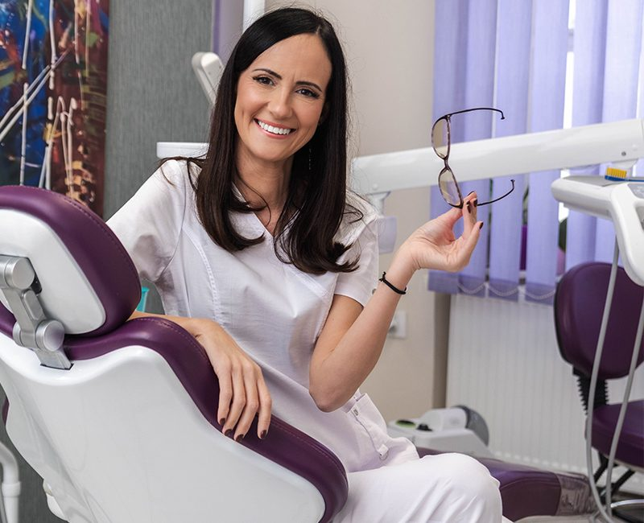
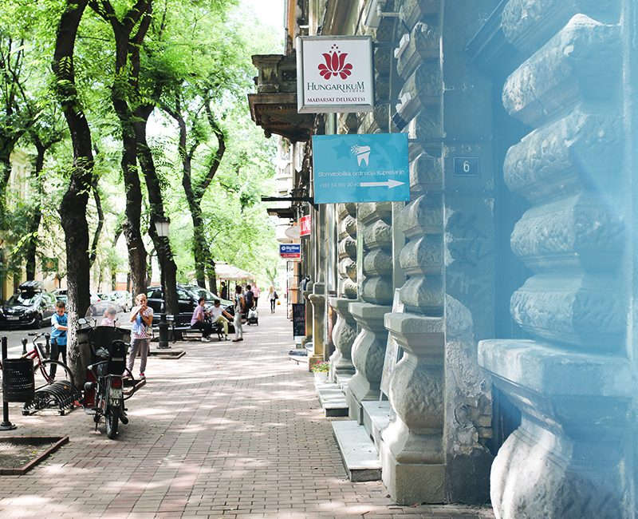
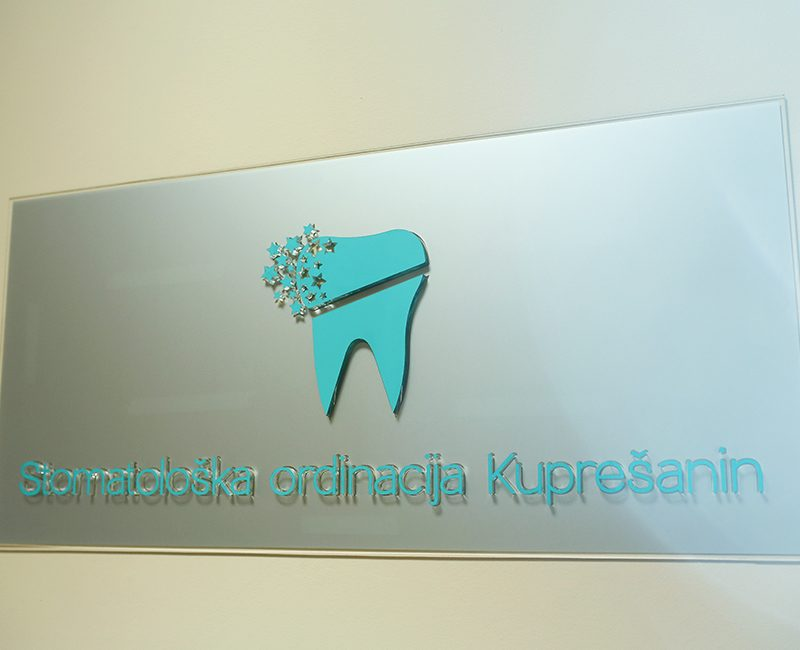
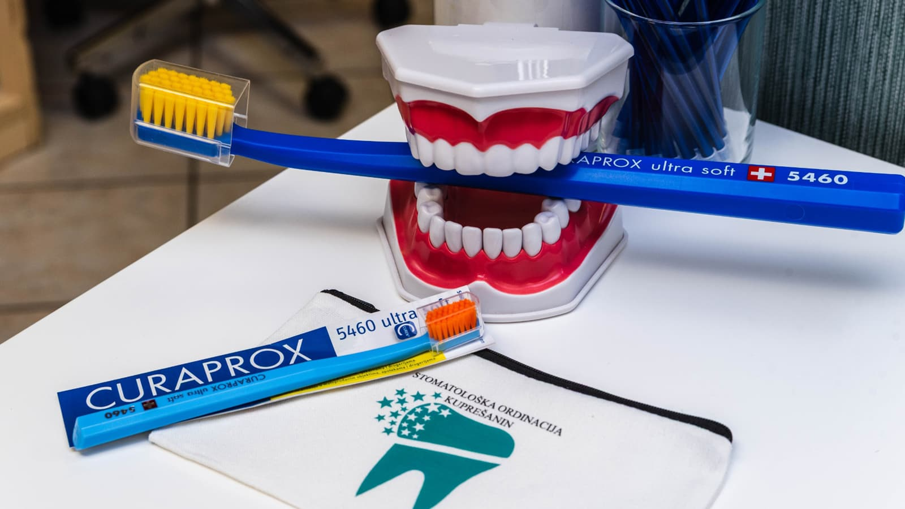
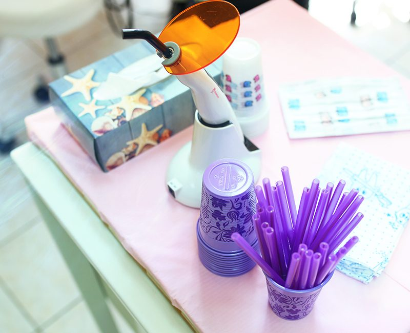
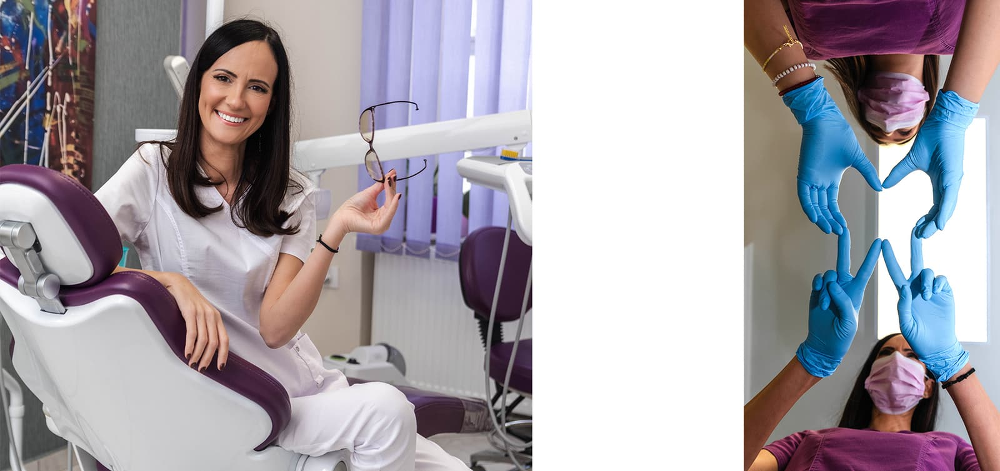
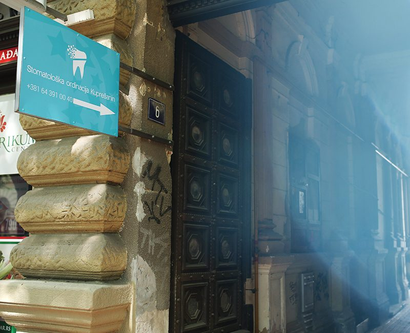
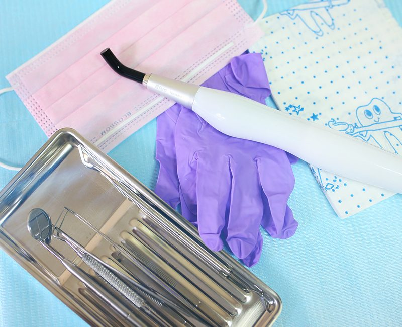
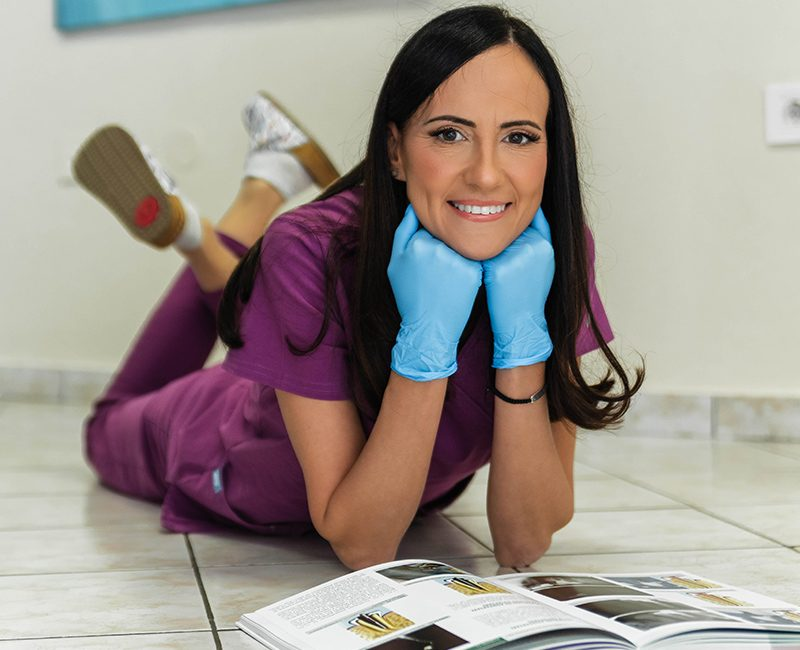
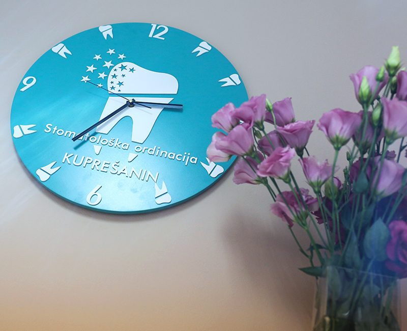

Preventiva
Obuka o higijeni, uklanjanje naslaga, fluorizacija, zalivanje fisura i night guard za škrgutanje zubima.
Ordinacija dr Ivane Kuprešanin Nimčević u samom centru Subotice. O vašim zubima brine sa timom specijalista, stomatoloških sestara i zubnih tehničara.




Individualna obuka kod sertifikovanog ITOP stomatologa. Dobijate:
Obuka o higijeni, uklanjanje naslaga, fluorizacija, zalivanje fisura i night guard za škrgutanje zubima.
Kompozitni ispuni za prednje i bočne zube. Kontrola na 3 do 6 meseci hvata karijes na početku, kada je popravka gotovo bezbolna.
Kada nelečeni karijes zahvati pulpu (živac), zub se leči kroz kanal korena.
Potpuno od keramike, toliko da se ne može napraviti razlika između zuba i krunice, uz manje brušenja.
Metalo-keramički i cirkonijum mostovi, akrilatne i skeletirane proteze sa i bez atečmena.
Ultrazvučno uklanjanje kamenca je bezbolno. Kiretiranje i medikacija parodontalnih džepova.
Sve hirurške intervencije u usnoj duplji, uz lokalnu anesteziju.
Mobilne i fiksne proteze za položaj zuba; popravka i vađenje mlečnih zuba.






Pored estetskog problema, kamenac je glavni uzročnik parodontopatije: upale i krvarenja desni, klaćenja i na kraju ispadanja zuba.
Ultrazvučno uklanjanje kamenca je bezbolno, jer se naslage uklanjaju vibracijama aparata.
Metalo-keramičke krune su otporne i dugotrajne. Bezmetalne su potpuno od keramike, traže manje brušenja zuba, a estetika je na znatno većem nivou.
Kada je izvađeno mnogo zuba, kada je razmak između preostalih zuba velik ili su preostali zubi u lošem stanju.
Ostavite ime i broj, a mi vas zovemo da dogovorimo termin.
Dimitrija Tucovića 6, Subotica